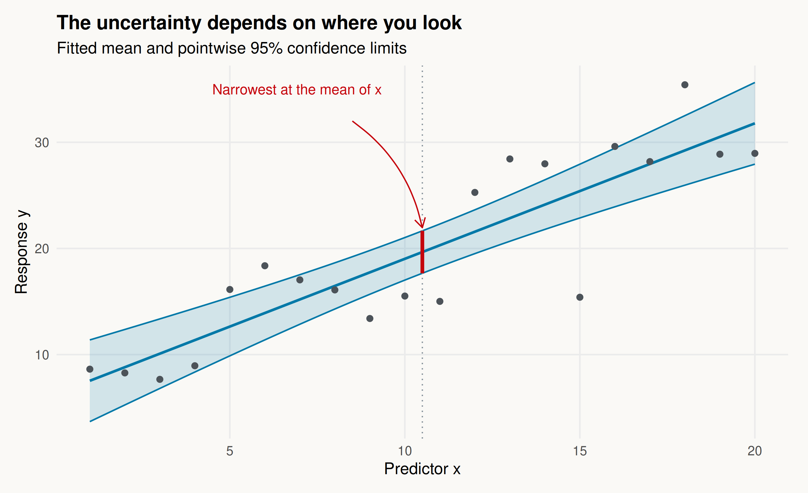
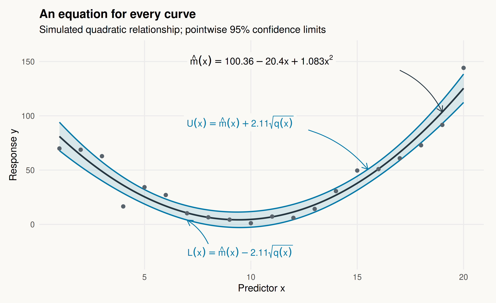

How to get analytic confidence limits for a regression line/curve
From a straight line to a polynomial, with a little help from R
Biostatistics
Regression
R Programming
Use coefficient variances and covariances to derive pointwise confidence limits for a fitted line or polynomial curve, with reproducible R examples.
Author
Lu Mao
Published
September 25, 2026
This question came up in a collaboration with radiologists. We were studying the relationship between two biomarkers and wanted to add confidence limits to a fitted regression line. We already had confidence intervals for the intercept and slope. Could we simply combine their lower endpoints to get the lower line, and their upper endpoints to get the upper line?
It sounds reasonable at first, but the resulting region was surprisingly wide. A higher slope often comes with a lower intercept: the two estimates move together to keep the fitted line close to the observations. Combining their intervals separately loses that relationship.
The practical setting was biomarker calibration. In our multicenter liver iron study, for example, we related MRI-based R2* to liver iron concentration (Hernando et al., 2023). Figure 3 shows the fitted calibration lines and their confidence limits.
There was also a useful request during review: could we provide an equation for the limits, rather than just a plot? An equation would let readers calculate the uncertainty at a biomarker value of their own choosing.
Let us work through that calculation, using simulated data to keep things simple. We will start with a straight line and then allow it to bend.
Reproduce the examples
All data are simulated here; no external data files are needed. Copy the R code blocks into a script and run them from top to bottom in a fresh R session, including the setup below. Expand the folded blocks to see the complete code.
The calculations use the stats package included with R, and the figures use ggplot2 (version 3.4.0 or later). The setup uses knitr for figure options; arrows use grid, which is also included with R. Install the two additional packages once:
install.packages(c("ggplot2", "knitr"))
The code creates an images/regression-confidence/ folder in your working directory and saves both figures there. Fixed random seeds reproduce the simulated examples. The code was checked with R 4.3.3, ggplot2 3.4.4, and knitr 1.52.
The idea is estimate plus or minus a margin of error
The regression curve estimates the mean response at each value of \(x\). Call that mean \(m(x)\) and its estimate \(\widehat m(x)\). The usual pointwise confidence limits have a familiar form:
\[
\widehat m(x)\ \pm\ t_*\times
\underbrace{\operatorname{se}\{\widehat m(x)\}}_{\text{standard error of the fitted mean}}.
\]
For a 95% interval, \(t_*\) is the appropriate multiplier from a \(t\) distribution—often around 2. R gets it from qt(0.975, df.residual(obj)). The main task is to find the standard error of the fitted mean, rather than the standard errors of the coefficients separately.
Let \(V_{00}\) and \(V_{11}\) be the estimated variances of the intercept and slope, and \(V_{01}\) their estimated covariance. These are entries of the matrix returned by vcov(). The standard error is
Even for a straight fitted line, the confidence limits generally curve. They are narrowest at the mean of the observed \(x\) values and widen as we move away. Near the center, uncertainty about the line’s tilt has relatively little effect. Farther out, the same change in slope makes a larger difference.
The next figure illustrates this. Expand the code if you would like to reproduce the simulated data and plot.
Show the simulation and plotting code
set.seed(2024)linear_dat <-data.frame(x =1:20)linear_dat$y <-3+1.7* linear_dat$x +4*rnorm(20)linear_fit <-lm(y ~ x, data = linear_dat)grid <-data.frame(x =seq(1, 20, length.out =301))linear_ci <-cbind(grid, predict(linear_fit, grid,interval ="confidence"))xbar <-mean(linear_dat$x)center_ci <-predict(linear_fit, data.frame(x = xbar),interval ="confidence")linear_plot <-ggplot(linear_ci, aes(x, fit)) +geom_ribbon(aes(ymin = lwr, ymax = upr), fill = blue, alpha = .16) +geom_line(aes(y = lwr), color = blue, linewidth = .6) +geom_line(aes(y = upr), color = blue, linewidth = .6) +geom_line(color = blue, linewidth =1) +geom_point(data = linear_dat, aes(x, y), color ="#4C5359", size =2) +geom_vline(xintercept = xbar, color ="#85919A", linetype ="dotted") +annotate("segment", x = xbar, xend = xbar,y = center_ci[1, "lwr"], yend = center_ci[1, "upr"],color = red, linewidth =1.4) +annotate("text", x =4.5, y =35, label ="Narrowest at the mean of x",hjust =0, color = red, size =4) +annotate("curve", x =8.5, y =32, xend = xbar,yend = center_ci[1, "upr"] + .3, curvature =-.2,arrow = grid::arrow(length = grid::unit(.12, "inches")),color = red) +labs(title ="The uncertainty depends on where you look",subtitle ="Fitted mean and pointwise 95% confidence limits",x ="Predictor x", y ="Response y")ggsave("images/regression-confidence/linear-confidence.png", linear_plot,width =9, height =5.5, dpi =180, bg = paper)linear_plot

A confidence interval for the mean line has its narrowest point at the mean predictor value. The dots are simulated observations.
We are using the usual linear-regression assumptions: independent, normally distributed errors with the same variance around a correctly specified mean curve. Under those assumptions, the \(t\) calculation gives exact 95% coverage at any fixed value of \(x\).
Now let the line bend
A quadratic model adds \(x^2\), but the principle stays the same. Here is the example that first helped me work through the algebra:
set.seed(1234)dat <-data.frame(x =1:20)dat$y <- dat$x + (dat$x -10)^2+10*rnorm(20)obj <-lm(y ~ x +I(x^2), data = dat)beta <-coef(obj)V <-vcov(obj)critical <-qt(0.975, df.residual(obj))
To find its standard error, we include the variance of each term and the covariance between every pair. It helps to give the expression under the square root a name, \(q(x)\):
Then \(\operatorname{se}\{\widehat m(x)\}=\sqrt{q(x)}\). Notice the coefficient of \(x^2\): it includes the covariance between the intercept and the quadratic coefficient, as well as the variance of the slope. That is an easy term to overlook when doing the calculation by hand.
The folded code below extracts these coefficients from vcov() and evaluates the limits on a fine grid. The mathematical subscripts start at zero; R’s matrix indices start at one.
Show how to calculate and check the confidence limits
With 20 observations and three fitted coefficients, we have 17 residual degrees of freedom and \(t_*\approx2.11\). The lower and upper limits are therefore
These numbers are rounded for display; the calculations use the unrounded coefficients. The small coefficients of the higher powers need a few more decimal places because they multiply larger numbers.
That gives us an equation for each of the three curves in the figure. The mean is quadratic, while its confidence limits involve the square root of a fourth-degree polynomial. Expand the plotting code to see how the equation labels and arrows are added.
Show the plotting code, including the arrows
p <-ggplot(curve, aes(x, fit)) +geom_ribbon(aes(ymin = lwr, ymax = upr), fill = blue, alpha = .14) +geom_line(color ="#263640", linewidth =1) +geom_line(aes(y = lwr), color = blue, linewidth = .8) +geom_line(aes(y = upr), color = blue, linewidth = .8) +geom_point(data = dat, aes(x, y), size =2, color ="#59636B") +labs(x ="Predictor x", y ="Response y",title ="An equation for every curve",subtitle ="Simulated quadratic relationship; pointwise 95% confidence limits")at <-function(x, column) {predict(obj, data.frame(x = x), interval ="confidence")[1, column]}arrow_tip <- grid::arrow(length = grid::unit(.12, "inches"))p <- p +annotate("label", x =10.5, y =151, size =4.4, parse =TRUE,label.size =NA, fill = paper,label ="hat(m)(x)==100.36-20.40*x+1.083*x^2") +annotate("curve", x =17, y =142, xend =19, yend =at(19, "fit"),curvature =-.18, arrow = arrow_tip, color ="#263640") +annotate("label", x =9.5, y =94, size =4.2, color = blue,label.size =NA, fill = paper,parse =TRUE, label ="U(x)==hat(m)(x)+2.11*sqrt(q(x))") +annotate("curve", x =12.7, y =87, xend =15.5,yend =at(15.5, "upr"), curvature =-.15,arrow = arrow_tip, color = blue) +annotate("label", x =9.5, y =-25, size =4.2, color = blue,label.size =NA, fill = paper,parse =TRUE, label ="L(x)==hat(m)(x)-2.11*sqrt(q(x))") +annotate("curve", x =8, y =-18, xend =7,yend =at(7, "lwr"), curvature = .15,arrow = arrow_tip, color = blue) +coord_cartesian(ylim =c(-32, 160))ggsave("images/regression-confidence/quadratic-confidence.png", p,width =9, height =5.5, dpi =180, bg = paper)p

The fitted quadratic mean and its two pointwise 95% confidence curves. Arrows connect each expression to the corresponding curve; q(x) is given above. Labels are rounded; the curves use full precision.
For example, at \(x=10.5\), the fitted mean is 5.49 and its 95% confidence interval is \([-1.72,\,12.70]\). We can also get that directly from R:
A cubic adds another coefficient; a higher-degree polynomial adds more. We still combine the coefficient variances and covariances in exactly the same way.
There is a compact way to write all of that bookkeeping. For a degree-\(p\) polynomial, collect its powers in the vector
\[
\boldsymbol a(x)=(1,x,x^2,\ldots,x^p)^\mathsf T.
\]
If \(V\) is the covariance matrix from vcov(), then
The matrix expression is just shorthand for the expansion we did above. A product of \(x^i\) and \(x^j\) contributes to the power \(x^{i+j}\), so we can let R collect matching powers. The result is a variance polynomial of degree at most \(2p\).
The two functions below do that work. poly_cl() extracts the coefficients of the mean and variance polynomials; evaluate_cl() calculates the fitted mean and limits at whichever values of \(x\) we choose. They expect a model written with the raw powers, such as y ~ x + I(x^2).
Show the reusable functions
poly_cl <-function(obj, alpha =0.05, variable ="x") { beta <-coef(obj) V <-vcov(obj) p <-length(beta) -1L x <-model.frame(obj)[[variable]]if (!is.numeric(x) ||anyNA(beta) ||df.residual(obj) <=0) {stop("Need a full-rank fit and a numeric predictor in the model frame.") } expected <-outer(x, 0:p, `^`)if (!isTRUE(all.equal(unname(model.matrix(obj)), expected,check.attributes =FALSE))) {stop("Model columns must be 1, x, x^2, ..., x^p, in that order.") }if (length(alpha) !=1L ||!is.finite(alpha) || alpha <=0|| alpha >=1) stop("alpha must lie between 0 and 1.") g <-numeric(2L * p +1L)for (i in0:p) {for (j in0:p) { g[i + j +1L] <- g[i + j +1L] + V[i +1L, j +1L] } }names(g) <-paste0("g", 0:(2L * p))list(beta = beta, g = g, V = V,critical =qt(1- alpha /2, df.residual(obj)))}evaluate_cl <-function(info, x) { p <-length(info$beta) -1L A <-outer(x, 0:p, `^`) mu <-drop(A %*% info$beta)# Retain the covariance form for numerical evaluation. variance <-rowSums((A %*% info$V) * A)if (any(variance <0)) stop("Negative variance: check numerical stability.") half_width <- info$critical *sqrt(variance)data.frame(x = x, fit = mu,lwr = mu - half_width, upr = mu + half_width)}
Once the functions are defined, using them is short:
info <-poly_cl(obj)round(evaluate_cl(info, x =c(5, 10, 15)), 2)
x fit lwr upr
1 5 25.41 18.76 32.06
2 10 4.59 -2.60 11.79
3 15 37.92 31.48 44.36
The analytic expressions are stored in info$beta (the mean coefficients), info$g (the variance coefficients), and info$critical (the multiplier). For a cubic, fit lm(y ~ x + I(x^2) + I(x^3), data = dat) and pass that fit to the same function.
One small R detail: poly(x, p) uses an orthogonal basis by default, so its coefficients have a different interpretation. predict() handles that correctly, but the helper here is designed for the explicit powers used in our examples. For high degrees or large predictor values, centering and scaling \(x\) can also make calculations more stable.
What do these limits tell us?
These are pointwise confidence limits for the mean: they describe uncertainty about the average response at a chosen \(x\). They do not describe the range of individual observations, and joining them into a ribbon does not make it a 95% simultaneous band for the whole curve.
If we want to predict one new person’s biomarker value, we also need to allow for individual variation around the mean. R supplies the wider prediction interval with one change:
For coverage of the entire mean curve at once, a simultaneous band is needed instead. That is a different question from the pointwise intervals developed here.
If a reviewer asks for analytic confidence limits, I would report three ingredients: the fitted mean, the expression under the square root, and the multiplier. Together with the predictor units and intended range of use, they let readers calculate the limits themselves. For everyday plotting, predict() already does the calculation; writing out the formula shows what is behind the ribbon.
References
Hernando, D., Zhao, R., Yuan, Q., et al. (2023). Multicenter reproducibility of liver iron quantification with 1.5-T and 3.0-T MRI. Radiology, 306(2), e213256. doi:10.1148/radiol.213256.